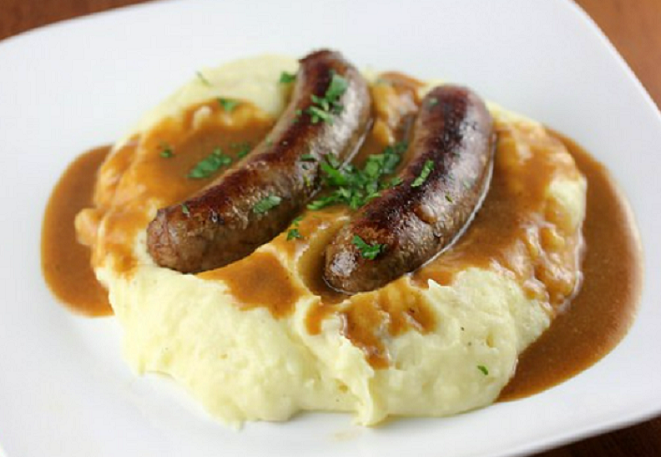

재킷 포테이토
껍질째 먹는 구운 감자를 재킷 포테이토라고 부른다. 섬유질이 많고 고소한 감자 껍질을 그냥 버리는 것은 아깝기 때문에 감자를 통으로 굽는다. 오븐에 갓 굽혀 나온 감자를 반으로 가른 모습이 꼭 재킷을 걸치고 있는 것처럼 보인다고 해서 이런 이름이 붙었다. 감자를 반으로 갈라 속 안에 고명을 얹어 먹는 것이 특징이다.
패스티
데번에서 유래한 페이스트리이다. 일반적으로 고기와 야채와 같은 익히지 않은 소를 평평한 쇼트 크러스트 페이스트리 원의 절반에 놓고 페이스트리를 반으로 접어 소들을 반원으로 감싸고 구부러진 가장자리를 크림핑하여 굽기 전에 밀봉한다.

뱅어스 앤 매쉬
뱅어스는 소시지를 뜻하는 말, 매쉬는 으깬 감자를 뜻하는 말로 이 음식은 다른 말로 '소시지와 매쉬'라고 하기도 한다. 포슬포슬한 매쉬 포테이토에 잘 익은 뽀득뽀득한 소시지를 곁들여 먹는 음식이다.
피시 앤 칩스